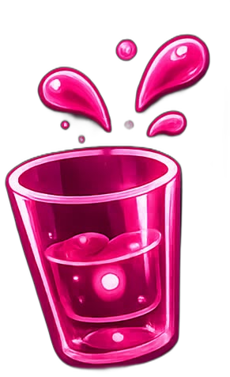
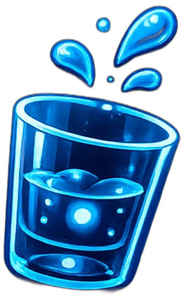

Euer KI-Spielleiter wartet schon. 😎


Kumpel-Stimme & Sound
Allgemein
Kumpel-Stimme im Detail
Wähle hier, welche Systemstimme der Kumpel benutzt. Wichtig auf dem iPhone: Safari erlaubt Web-Apps grundsätzlich keinen Zugriff auf die guten „Erweitert/Enhanced"- oder „Siri"-Stimmen, selbst wenn du sie in den iPhone-Einstellungen heruntergeladen hast – das ist eine feste Einschränkung von Apple (kein App-Bug), du bekommst hier also nur die robotische Standardstimme (meist „Anna").
Externe Stimme (optional)
Über PreGame
PreGame · Version 1.0
Die Party-App fürs Vorglühen: Trinkspiele, ein Punkte-Modus für alkoholfreie Runden und ein quatschender Kumpel als Stimmungsmacher.
Mindestens 2 Spieler für eine Runde.
Wähle dein Spiel und lasst die Party beginnen! 🎉
Wählt eine feste Kategorie oder lasst sie zufällig durchmischen.
Gib das Handy . Alle anderen schauen weg!
2–6: rechter Nachbar trinkt · 7: du wählst wer trinkt · 8–12: linker Nachbar trinkt · Pasch: du verteilst frei
Runde beendet – hier ist eure Bilanz.
Nur auf diesem Gerät – wiederkehrende Namen sammeln über mehrere Runden Statistiken.